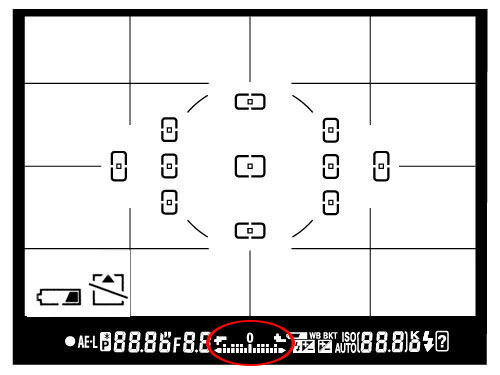
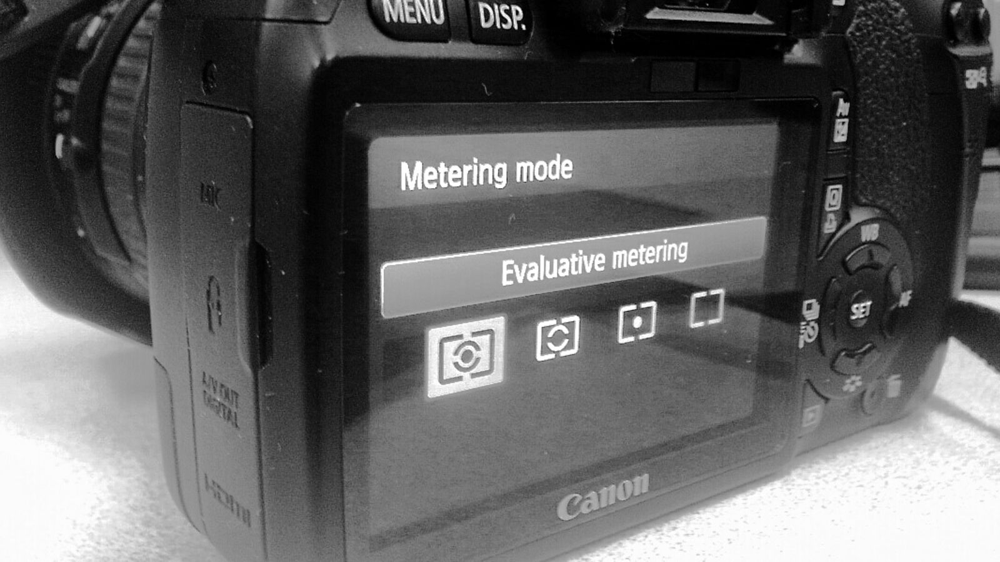
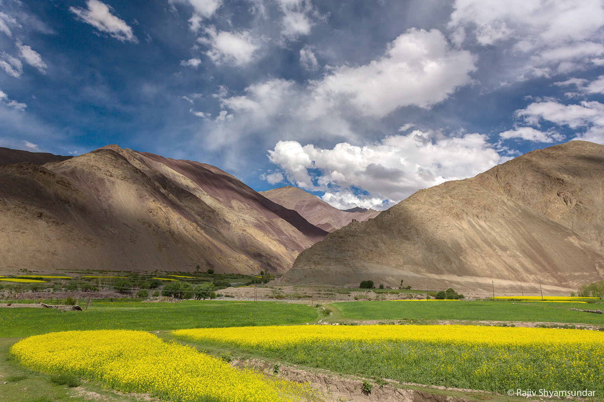
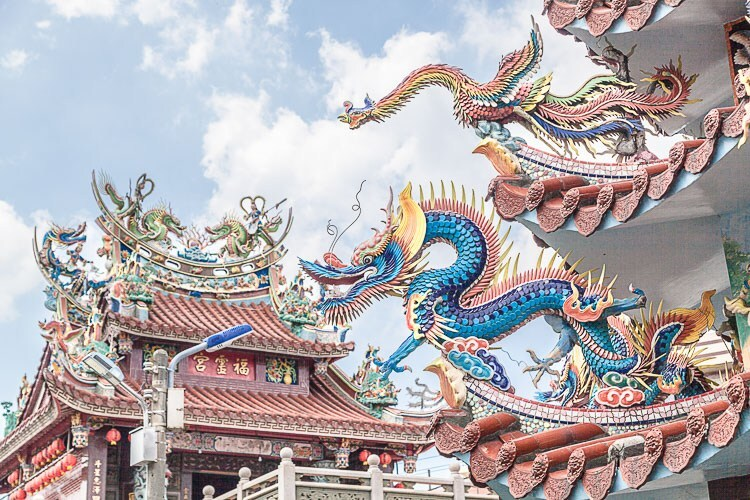
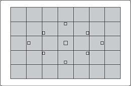
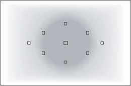
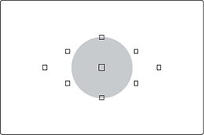
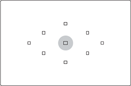

15 Oct 2019
Author : Nathachai
การวัดแสง มันคืออะไรกัน? คำถามคลาสสิคสำหรับคนที่เริ่มต้นเลย แล้วยังต้องวัดแสงไหม แล้ววัดแสงยังไง แล้วมันยากไหม ทำไมการวัดแสงมันดูเข้าใจยากและวุ่นวายใจ ขอบอกเลยว่าใจเย็น ๆ ก่อนนะครับ แล้วมาเริ่มต้นใหม่พร้อมกันเนอะว่าระบบวัดแสงมันเป็นยังไง แล้วเราจะเข้าใจมันได้ยัง ควรใช้แบบไหนบ้าง
กล้องดิจิตอลในปัจจุบันไม่ว่าจะเป็น DSLR หรือ Mirrorless เองก็จะมีสิ่งที่เรียกว่า “ระบบวัดแสง” ไม่ว่าจะเรียกภาษาอังกฤษว่า “Metering Mode”, “Camera Metering”, “Exposure Metering” มันก็ให้ความหมายเดียวกัน หลายคำถามที่เกิดขึ้นตั้งแต่เริ่มต้นทำเว็บมา และโดนถามบ่อยครั้งจะเป็นเรื่อง “การวัดแสงและระบบวัดแสง” มากเลย ในวันนี้ขอพูดเรื่องพื้นฐานเกี่ยวกับการวัดแสงสำหรับมือใหม่กันครับ
คำถามคลาสสิคสำหรับคนที่เริ่มต้นเลย การวัดแสงมันคืออะไรกัน? ผมอธิบายแบบง่าย ๆ ไม่ต้องตีความเยอะ คือการที่กล้องมันบอกเราว่า แสงที่เข้ามาในกล้องอ่ะ มันเป็นยังไง เพื่อให้เราประเมินได้ว่าภาพที่เราจะถ่าย จ ะออกมา สว่าง พอดี หรือมืดไปนั่นเอง
มีไว้เพื่อช่วยให้มันคำนวณค่าแสงออกมาได้ตรงตามที่เราเห็นที่สุด โหมดวัดแสงเหมือนการเลือกใช้สูตรคำนวณว่าจะให้มันวัดแสงจากส่วนไหนของภาพได้บ้าง ผมยกตัวอย่างสามแบบคือ
ระบบวัดแสงแบบเฉลี่ยทั้งภาพเนี่ย ปกติกล้องมันจะทำงานได้ดีมากเมื่อมีความสว่างในฉากเท่า ๆ กัน แต่ในโลกแห่งความเป็นจริงมันไม่ได้เจอสถานที่ที่มันมีความสว่างเท่ากันไปตลอดนี่ บางครั้งเราเจอสถานที่ซึ่งมีวัตถุและแสงในระดับที่ต่างกัน อ่ะมานึกภาพตามตรงนี้ เอาวัดแสงเฉลี่ยปกติก่อน เราถ่ายภาพท้องฟ้าโดยไม่มีก้อนเมฆเลย มีดวงอาทิตย์อยู่ด้วย พอเราจะถ่ายกล้องก็จะคำนวณแสงเฉลี่ยได้ดี เพราะท้องฟ้าสว่างสดใสไง ไม่มีอะไรบัง แสงก็พอ วัดแสงเฉลี่ยได้สบายมาก
พอลองนึกภาพนะจะเกิดอะไรขึ้น ถ้ามีดวงอาทิตย์อยู่ด้านหน้าเรา และมีวัตถุขนาดใหญ่และมืดกว่ามาก (เมื่อเทียบกับเมฆและท้องฟ้า) เข้ามาอยู่ในฉาก โดยที่เราวัดแสงเฉลี่ยอยู่… กล้องมันก็จะบอกว่า ภาพของเรามืดนั่นเอง เพราะมันเฉลี่ยค่าแสงทั้งภาพไง มันเห็นอะไรมืด ๆ ดำ ๆ กินพื้นที่ในภาพเยอะ พอมันเฉลี่ยออกมามันก็มืด ทำให้การตั้งค่าออกมาผิดเพี้ยนไม่ตรงตามที่เราต้องการ
ภาพนี้วัดแสงจากตัวมังกรเป็นหลัก ซึ่งมันค่อนข้างย้อนแสง กล้องเห็นว่าตัวมังกรและอาคารมืด เมื่อเราปรับค่าตามที่กล้องวัดมาผิด แสงก็เลยดูสว่างเกินไป
ก็ต้องมาจบด้วยการเลือกโหมดวัดแสงให้มันถูกต้องกับสิ่งที่เราจะถ่ายไง เพราะโหมดวัดแสงเป็นเหมือนสูตรการคำนวณสำหรับกล้องเรา เพื่อให้มันนำค่าแสงที่ได้มาคำนวณกับสูตรที่ถูกต้อง แล้วเราก็จะได้ค่าแสงที่ค่อนข้างจะโอเคที่สุดกับภาพที่เราอยากจะได้นั่นเอง
1.การวัดแสงเฉลี่ยแสงจากทั้งภาพ (Matrix Metering)
นี่เป็นค่าเริ่มต้นในโหมดการวัดแสงที่สามารถใช้ได้กับภาพหลายประเภทตั้งแต่ภาพทิวทัศน์ไปจนถึงภาพสแนปช็อต การวัดแสงรอบๆ จุด AF ในโหมดนี้จะให้ความสมดุลของแสงสว่างทั่วทั้งภาพ
2.การวัดแสงเฉลี่ยแสงเน้นกลางภาพ (Center-Weight Metering)
ในโหมดนี้แม้จะมีรูปแบบการวัดแสงคล้ายกับการวัดแสงบางส่วน แต่กล้องจะตอบสนองต่อแสงแวดล้อมด้วย ให้การวัดแสงที่มีความสมดุลทั่วทั้งภาพโดยเน้นปริมาณแสงที่กึ่งกลางภาพ
3.วัดแสงบางส่วน (Partial Metering)
โหมดนี้จะวัดความสว่างของพื้นที่สีเทา คือจะทำการวัดแสงในพื้นที่เล็กและส่วนรอบๆ สามารถใช้เมื่อถ่ายภาพพอร์ตเทรตโคลสอัพได้ด้วย
4.วัดแสงแบบจุด (Spot Metering)
วัดเฉพาะความสว่างของวงกลมสีเทาเล็กๆ ในภาพ โหมดนี้เป็นประโยชน์เมื่อคุณต้องการวัดเฉพาะความสว่างของใบหน้าตัวแบบ เช่น เมื่อมีแสงจ้าด้านหลังภาพ